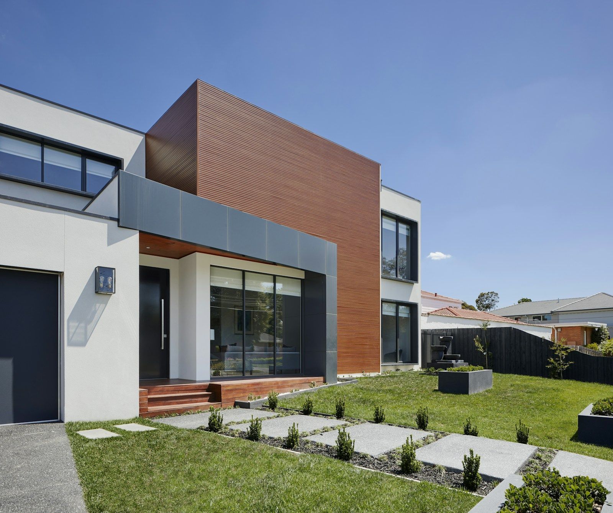

Демонстрационное фото
Демонстрационное фото01 / РЕМОНТ КВАРТИР
Обсудить ремонт ↗ТЕРРАСЫ / ДЕРЕВО / РЕМОНТ
От комнаты до террасы.
Работы для дома, в котором
хочется жить.
Демонстрационная подборка. Фотографии показывают стиль страницы, а не выполненные работы LAN OÜ.
Демонстрационное фото Демонстрационное фото
Демонстрационное фотоОбшивка, деревянные детали и небольшие изменения в интерьере.

Демонстрационное фотоНастилы, ступени и ограждения. Пространство для ваших идей.
Не обязательно менять всё.
Иногда достаточно одной детали.
02 / КАК РАБОТАЕМ
Понятные шаги, чтобы вы знали,
что будет дальше.
Расскажите о задаче. Фотографии и примерные размеры помогут понять детали.
Уточним объём, материалы и сроки. Согласуем стоимость до начала работ.
Действуем по договорённости. Изменения обсуждаем с вами заранее.
Вместе проверим выполненную работу и обсудим вопросы по уходу.
03 / ПОЛЕЗНО ЗНАТЬ
Да. Необязательно планировать полный ремонт: можно обсудить отдельную комнату, деревянную деталь или обновление террасы.
Краткое описание, несколько фотографий, примерные размеры и местоположение объекта. Если информации недостаточно, уточним детали.
Стоимость зависит от состояния объекта, объёма работ и материалов. Сначала обсудим задачу; для точной оценки может понадобиться осмотр.
ДАВАЙТЕ НАЧНЁМ С ВАШЕЙ ИДЕИ
Несколько слов о задаче — хороший первый шаг.
Добавьте размеры, пожелания и удобные сроки.